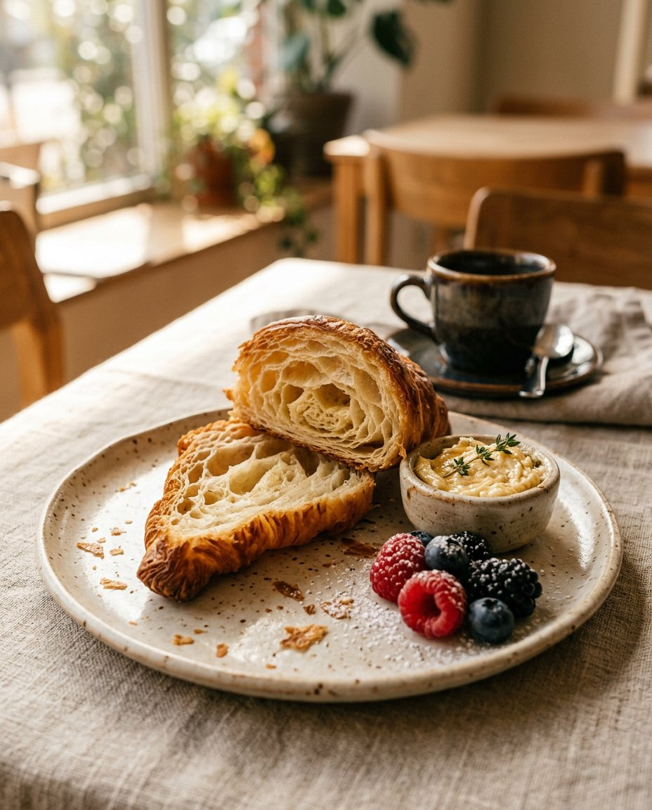

صبحهای آرام، مزههای تازهقصهی کافهی ماجزئیات کوچیک،
جزئیات کوچیک،
حالِ خوبِ بزرگ.
ما باور داریم یه قهوهی خوب فقط قهوه نیست؛ یه مکث کوچیکه وسط شلوغی روز. دونهها رو با دقت انتخاب میکنیم و هر سفارش رو همون لحظه، تازه آماده میکنیم.
انتخابت رو پیدا کن ←